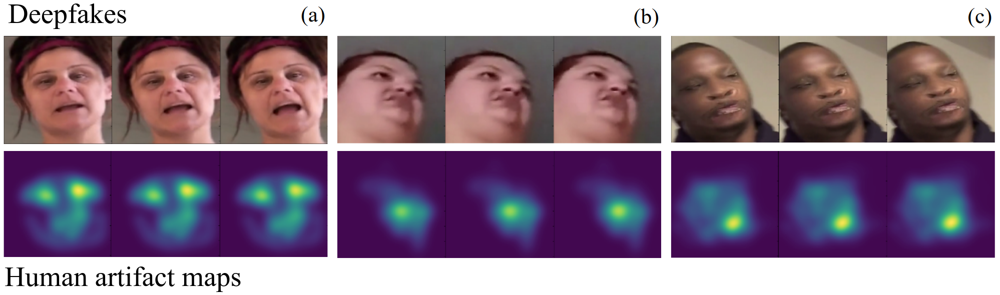

Framework and Data

Our Framework utilises both machine and human supervision to learn to highlight unnatural deepfake artifacts. This has two advantages: it allows us to build better deepfake detectors, and it gives rise to Deepfake Caricatures, a new way of modifying videos to expose doctoring.